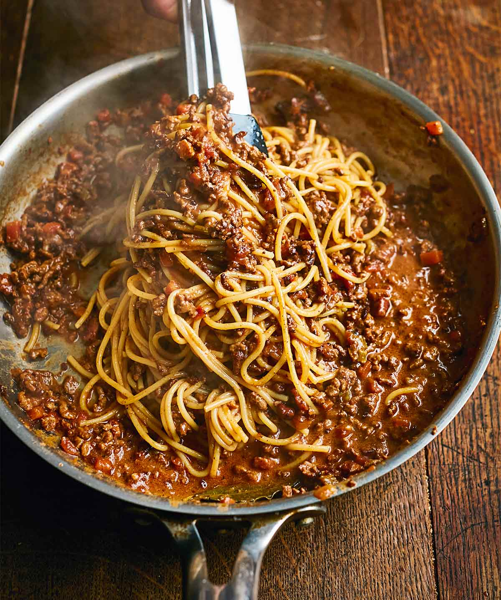

Bolognese

A thick, deep & flavourful bolognese!
This crowd pleaser is the perfect to cook in the background during a lazy Sunday afternoon.
Ingredients:
- Spaghetti
- 1lb Ground Beef & Pork (or other meats)
- Milk
- Salt & Pepper
- Basil, Oregano, Thyme
- Cheese
- Tomato Puree
- 2x Can Chopped Tomatoes
- Choice of Veg (Carrot, Celery, Onion, Garlic at Minimum)
- Beef Stock & Marmite
Directions
- Fry & season the meat. Let it caremalize in the juices while preparing the veg!
- Chop, fry & season the veg.
- Mix veg & meat in the pan. Add tomato puree, can of chopped tomatoes, 1 can milk, 1 can water, beef stock cube, marmite, and season with herbs.
- Cook for three hours, until all the liquid has evaporated.
- Serve with fresh spaghetti & cheese!
Return